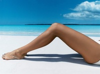

Плезные статьи о наращивании ногтей
Гелевые ногти — красиво и безопасно
К сожалению, не всем женщинам даны красивые, ровные и здоровые ногти от природы. Но современные методы постоянно совершенствуются, и теперь вы можете с легкостью избавиться от ломких и слоящихся ногтей, нарастив гелевые.
Немного истории
Коснувшись истории, можно сказать, что первыми представительницами прекрасного пола, которые задумались о наращивании ногтей, и более того, смогли сделать мечту реальностью, были такие Голливудские дивы, такие как Грета Гарбо и Марлен Дитрих. Грета Гарбо не могла похвастаться красивыми ногтями, они у нее имели плохую текстуру пластины, да и к тому же были подвержены отслаиванию и ломкости. Тогда она придумала вырезать ногти из кинопленки и клеить поверх родных ногтей. Конструкция эта имела весьма не продолжительную жизнь и уже через 3 часа накладные ногти отклеивались. Зато результат был воистину ошеломителен — красивые, ухоженные и яркие ногти и все за час работы. Такое новшество очень долго применялось повсеместно всеми женщинами, однако непродолжительный срок носки таких ногтей стал мешать и прекрасная половина начала искать новые пути на встречу к мечте о длинных и красивых ногтях. Да…история настоящих накладных ногтей весьма занимательна.
Особенности геля
В производстве гелевых ногтей применяется специальный мягкий гель, на который воздействуют ультрафиолетовым излучением, в результате чего он становится очень плотным, что позволяет оказывать на него механическую нагрузку. Гелевые ногти, в отличие от акриловых, более близки по физиологии к натуральным, потому что могут пропускать воздух и влагу. Сушка гелевого ногтя предотвращает проникновение различных грибков. Даже не покрываете гелевые ногти лаком, они выглядят вполне натурально. Кроме того, они довольно надежно держатся и достаточно крепкие. Понятно, что натуральные ногти продолжают расти в своем обычном режиме, даже находясь под искусственным «панцирем», поэтому коррекцию гелевых ногтей необходимо производить раз в 3-4 недели.
Предосторожности
Но есть и определенные нюансы при наращивании гелевых ногтей. Так, например, если вы до процедуры выполняли домашнюю работу без перчаток, то теперь стирку, мытье посуды, приборку нужно будет делать только в перчатках. Дело в том, что гель крайне чувствителен к кислотам и щелочам.
Лак с гелевого ногтя снимать необходимо только жидкостями, не содержащими ацетон. Сразу после наращивания ногтей какое-то время придется отказаться вообще от выполнения рутинной домашней работы и побыть «принцессой». Немаловажен тот факт, что если вы привыкли пользоваться металлическими пилочками и шлифовками для ногтей, то теперь придется отказаться от их использования, а приобрести специальную мелкообразивную пилочку.
Наращивать гелевые ногти также безвредно, как красить волосы и ресницы. Они помогают не только увеличить длину ногтя, но и корректировать различные дефекты самой ногтевой пластины. Если ваши ногти подвержены ломкости и расслаиванию, то, конечно, можно прибегнуть к различным косметологическим манипуляциям по лечению и восстановлению ногтей, а можно быстро и безболезненно нарастить ногти.
Однако, стоит знать, что наращивать ногти можно только, если натуральные находятся, хоть и в печальном, но в здоровом состоянии. Если имеются какие-то механические дефекты ногтевой пластины и грибковые болезни, то создаваемое вакуумное пространство — это просто наиблагоприятнейшая среда для размножения уже имеющихся грибков и микроорганизмов.
Уход за нарощенными ногтями
Сегодня получить красивые и здоровые ногти стало довольно легко — нужно просто их нарастить. Одно посещение опытного мастера — и вы обладательница идеального маникюра. Однако чтобы сохранить привлекательность искусственных ногтей надолго, следует правильно за ними ухаживать. Чтобы наращенные формы не ломались и были прочными, рекомендуется соблюдать всего несколько элементарных правил.
Защита от внешних факторов
После того, как вы наростили ногти, нужно защищать их от внешнего воздействия. Руки не должны соприкасаться со средствами, содержащими ацетон. Этот продукт является врагом №1 для акрила и геля, поэтому, выбирая жидкость для удаления лака и бытовую химию, советуем внимательно читать этикетки и перечень компонентов, входящих в то или иное средство.
Стоит забыть о кусачках и ножницах. Длину и форму искусственных ногтей нужно корректировать только при помощи полировщика и пилки, которые должны быть не простыми, а со специальным покрытием. Лишь инструменты, предназначенные для нарощенных ногтей, помогут качественно устранить дефект и не нанести вреда ногтевой пластине.
Особое внимание стоит уделить средствам для покрытия акриловых или гелевых ногтей. Лаки должны быть качественными, поэтому при покупке желательно всегда проверять срок их годности и консистенцию.
Не бить и не ударять
Искусственные формы, как правило, отличаются хорошей прочностью. В ситуациях, когда ваш ноготок точно бы треснул, нарощенный будет чувствовать себя вполне комфортно. Но в любом случае не желательно подвергать их особо сильным испытаниям. Например, не стоит ударять ими о твердую поверхность, не ронять на формы тяжелые предметы… Вообщем, следует быть очень аккуратными. Нужно помнить, что искусственные пластины не просто приклеены к натуральным, они в буквальном смысле впаяны. Поэтому, если нарощенный ноготь оторвется, то отпадет и часть натурального, а это довольно болезненно.
Коррекция наращенных ногтей
Между коррекциями не нужно забывать и об уходе за кутикулой. Чтобы предотвратить образование заусенец и смягчить кутикулу, необходимо регулярно увлажнять и питать кожу вокруг ногтя специальными маслами с витаминами. При быстром росте кутикулы рекомендуется пользоваться кремами, способными замедлить ее рост. Такие препараты можно найти в любом специализированном магазине. Перед процедурой маникюра нет необходимости замачивать ногти, следует размягчать их особыми маслами. Так вы снизите риск их повреждения.
Если вы наростили ногти, то корректировать вам их придется один раз в три недели, так как именно за этот период времени натуральные ноготки успевают отрасти, что делает искусственные формы очень слабыми. Так что образовавшееся пространство нужно периодически покрывать новой порцией акрила или геля.
Перепады температуры
Нарощенные ногти довольно чутки к резким перепадам температур. Именно поэтому посещение сауны или бани должно быть умеренным, и не советуем сразу же после парилки прыгать в бассейн с холодной водой. Ногти, конечно же, не сломаются, а вот их структура может стать более хрупкой, что повышает риск поломки форм при незначительном ударе.
Сломленные ноготок
Если вы вдруг сломали ноготь, то не стоит пытаться избавиться от него самостоятельно в домашних условиях. Искусственные формы удаляются особым составом, а вся процедура занимает около часа. Неопытными движениями вы можете просто повредить свои ногти, сделать их более сухими, тонкими, ломкими и расслаивающимися. Именно поэтому заботу о нарощенных ногтях рекомендуется всегда доверять только профессионалу.
Важная деталь: лак на искусственных пластинах держится намного дольше, так что покрывать их толстым слоем лака нет необходимости, пусть лучше они свободно дышат.
Ухаживать за искусственными формами не так и сложно, как кажется на первый взгляд. Нужно просто быть очень аккуратными, пользоваться лишь качественными средствами, тогда ваши ноготки прослужат вам намного дольше.
Как снять нарощенные ногти в домашних условиях
Многие специалисты по наращиванию ногтей не рекомендуют снимать искусственные ногти в домашних условиях. Неправильная технология снятия может повредить и без того хрупким натуральным ноготкам. Но если вы все-таки решились выполнить эту операцию дома, а не в салоне, то внимательно ознакомьтесь с описанием самой процедуры. Прежде всего, способ снятия нарощенных ногтей зависит от используемого при наращивании материала — акрила или геля.
Снятие акриловых ногтей
Для начала необходимо избавиться от свободного края ногтя. Для этой процедуры лучше всего подходит катер, т.е. инструмент для снятия типсов. Можно также использовать кусачки для ногтей или ножницы. Не нужно обрезать ногти под корень, чтобы не повредить околоногтевую кожицу. При проведении этой процедуры необходимо соблюдать осторожность, так как при резке акриловых ногтей они могут разлетаться на мелкие кусочки в разные стороны. Не стоит использовать пилочки для ногтей, чтобы отпилить ноготь. Еще хуже будет, если пытаться отклеить акрил с ногтя. При наращивании ваши натуральные ногти обрабатывают специальным составом, чтобы искусственные ногти на них держались. Это соединение очень крепкое, поэтому, если пытаться оторвать акрил, то можно оторвать собственную ногтевую пластину.
После того, как вы срезали свободный край, вам понадобиться специальная пилочка для удаления верхнего слоя искусственного ногтя. Верхний слой — это покрытие, защищающее ноготь от царапин. Если не снять этот финиш-гель, то растворить акрил просто не получится. Пилка для этой процедуры должна быть грубой — 80/100 грит. Этой пилкой постепенно удаляем поверхностный слой с каждого ногтя. Учтите, что материал пилится очень плохо.
После того, как вы сняли финиш-гель, приступайте к растворению ногтей. Вам понадобиться специально предназначенная для этого жидкость - Acrylic Remover. Она продается в специализированных магазинах. Если достать ее не получилось, то попробуйте использовать жидкость для снятия лака, обязательно с ацетоном, или технический ацетон. Только учтите, что ацетон пагубно влияет на кожу, вызывая сильное раздражение, поэтому необходимо соблюдать крайнюю осторожность. Далее необходимо заготовить небольшие кусочки фольги для всех пальцев и кусочки ватных дисков. Смачиваем ватные диски в специальной жидкости, накладываем их на искусственные ногти и заворачиваем в фольгу. Следите, чтобы воздух под ноготь не попадал. Оставить акрил размягчаться нужно примерно минут на 40. За это время акрил приобретет желеобразную структуру, которую можно соскоблить или подходящим пластиковым инструментом, или пилкой для акрила. Старайтесь провести данную процедуру быстро, чтобы акрил не успел снова затвердеть на воздухе. Для окончательного удаления акрила с ногтевой пластины воспользуйтесь этой же жидкостью для размягчения. После всей процедуры снятия необходимо тщательно вымыть руки и нанести на них крем.
Снятие гелевых ногтей
Гелевые ногти почти не размягчаются и не растворяются, поэтому так легко снять их не получится. Здесь подойдет только метод спиливания. Пилку для этого тоже нужно выбрать особенную. Стеклянные пилочки сюда не подойдут, они только испортятся. Нужна крупнодисперсная пилка для обработки искусственного материала с дисперсностью 100 — 150 грит и длинной порядка 15 — 20 см. Для начала необходимо точно также срезать свободный край, чтобы облегчить себе работу. Учтите, что работа по спиливанию займет достаточно много времени, если все делать аккуратно. К тому же, при снятии искусственных гелевых ногтей таким методом выделяется очень много пыли, поэтому лучше надеть респиратор или маску. Зажмите пилочку между средним и большим пальцем, придерживайте ее указательным. Для того, чтобы не поранить пальцы от соприкосновения с пилкой, обмотайте их лейкопластырем. К тому же, так они не будут скользить по пилочке. Водите ногтем другой руки по пилке, следя за тем, чтобы не затрагивать кожу вокруг пальца. Необходимо периодически контролировать спиливание, чтобы избежать повреждения собственного ногтя. Для этого можно смочить ватный диск жидкостью для снятия лака и провести им по ногтю — сразу будет видно, где гель, а где собственный ноготь. Как только материал достаточно истончится, возьмите пилку с мелким абразивом (150/180 грит) и аккуратно уберите остатки материала. Но не старайтесь полностью спилить весь гель, так можно повредить ноготь. После того, как вы спилили весь искусственный материал, отполируйте ноготь. Вымойте руки и тщательно смажьте руки увлажняющим кремом, так как пыль от ногтей очень сушит кожу.
Помните о том, что лучше доверять процедуру снятия искусственных ногтей профессионалам, а самостоятельно это делать стоит только в крайних случаях.
Полезные статьи о маникюре
Узнаем характер по маникюру
Психологи давно знают, что форма и цвет ногтей могут многое сказать об их обладательнице. Так что иногда стоит присмотреться к маникюру собеседницы, чтобы узнать ее характер.
Квадратные ногти
Квадратные ногти указывают на замкнутость, такие женщины не выставляют свои эмоции и чувства напоказ. Они редко верят на слово и им сложно что-либо внушить.
Не стоит критиковать обладательниц квадратных ногтей. Их самомнение, как правило, немного завышено, а проявление самобичевания им абсолютно не свойственны. Они не будут жалеть никого: ни себя, ни других, так как очень сильные личности, да и прощать слабостей окружающим тоже не привыкли.
Цвет лака у обладательниц такой формы может быть любой. Если он яркий и агрессивный, например, красный, ярко-желтый, оранжевый или лиловый, то такая девушка обычно не прощает даже незначительных промашек, и второго шанса вы уже не получите.
Если оттенки спокойные и мягкие, то будет сложно достучаться до сердца данной особы. Френч или французский маникюр на квадратных ногтях говорит о смелой натуре, готовой на эксперименты.
Форма лопатки
Девушки с ногтями в форме лопатки, как правило, неромантичны. Они расчетливые и прагматичные натуры в хорошем смысле этих слов.
Яркий лак говорит о том, что женщина привыкла ставить перед собой определенные и четкие цели, а для их достижения могут «идти по головам», не взирая ни на что.
Если лак пастельных оттенков, а при этом еще и есть оригинальный рисунок, какие-либо аксессуары или украшения, перед вами девушка с отсутствием фантазии в любви. Эта особа идеально подходит для упорядоченной семейной жизни, где быт налажен, простыни выглажены, а по воскресеньям проходят тихие семейные обеды. А вот бурного секса в неожиданных местах можно от нее не ждать.
Если на лопатообразных ногтях нанесен французский маникюр, то их обладательница отлично представляет, чего она хочет, как это получить и правильно применить. Такие представительницы прекрасного пола всем полагаются лишь на свой собственный опыт или же на опыт знакомых.
Форма прямоугольника
Если вам встретилась девушка с ногтями в форме прямоугольника, то перед вами особа, которая привыкла жить по правилу: «а почему бы и не попробовать?». Она легко пойдет на эксперименты или на риск. Такие женщины — лидеры, особенно в любви.
Если прямоугольные ногти накрашены лаком спокойных оттенков, то их обладательница смело идет по жизни и поведет вас за собой. Если же лак выбран ярко-красный, то за маской самоуверенной женщины скрывается неуверенная в себе особа, которая нуждается в сильном плече.
Остроконечная форма
Особое внимание нужно уделить женщинам с остроконечной формой ноготков. Как правило, такие девушки являются артистичными натурами, фантазерками и инициативными романтиками. С такой женщиной вы точно не соскучитесь, ведь она обладает отличным чувством юмора, умеет поддержать разговор, приятна в общении.
Но в тоже время ее настроение часто меняется, она редко доводит что-либо до конца и может исчезнуть из вашей жизни в любой момент. Любительницы френча обладают такими качествами в полной мере.
Если же тона выбраны светло-розовые, матовые, с минимумом рисунков и украшений, то перед вами двойная натура, которая скрывает свои порывы за наигранной степенностью.
С такими девушками достаточно интересно, ведь никогда не знаешь, что ей придет на ум в следующий момент. Яркий лак обычно используют девочки-подростки или те, кто задержался в этом возрасте по тем или иным причинам. С такой особой мужчине придется примерить роль отца, быть покровителем, ответственным и сильным защитником, может быть даже хозяином.
Круглые ногти
Круглые ногти олицетворяют материнство. Мужчина рядом с женщиной, обладающей такой формой ноготков, чувствует себя тепло, спокойно, уютно. Ее призвание — это семья и домашний очаг.
Часто девушки с круглыми ногтями носят длинные волосы (или, по крайней мере, мечтают об этом) и неяркий макияж. Если такие ногти покрашены в агрессивный и ультрамодный цвет, то их обладательницу не устраивает спокойная жизнь, ей нужны перемены. А пастельные тона говорят об открытости и неумении что-либо скрывать.
Френч на круглых ноготках является сигналом утонченности и простоты.
Вот такая «занимательная хиромантия». Конечно, это касается только тех случаев, когда тот или иной вид маникюра присутствует постоянно!
Уход и восстановление ногтей
Страстно желая обновить что-либо в своем облике, иногда мы просто не знаем, с чего начать и за что взяться в первую очередь. Если всё внимание уделить волосам, то начинает страдать кожа, беремся за фигуру — забываем о ноготках, которые расслаиваются и ломаются…
Проблема ухода за ногтями
Казалось бы, с ногтями все намного проще, чем, скажем, с лишними килограммами — можно просто замаскировать дефекты слоем яркого и крепкого лака, а можно и двумя слоями. Но здесь подстерегает опасность того, что итак поврежденные ногти под толстыми слоями лака переживают больший стресс, дополнительные нагрузки, и через некоторый (довольно короткий) промежуток времени они отомстят вам еще более сложными проблемами, которые отнюдь не улучшат внешний вид рук.
Что же делать? Ведь практически все специалисты в области моды и женской красоты утверждают: первое, что бросается в глаза собеседнику и на что обращают внимание мужчины — это наши любимые ручки. И, к сожалению, мало на что можно рассчитывать в будущем, если с самых первых мгновений вы отпугнете собеседника торчащими заусеницами, обломанными или обкусанными ногтями.
Уход за ногтями осенью и весной
Прежде всего, нужно помнить о том, что большинство сезонных проблем красоты решаются комплексно, то есть при совокупной поддержке всего организма. Для этого необходимы нормальное питание, полноценный сон, курс поливитаминов, снижение или полное отсутствие стрессов, а соответственно их вредного влияния. Особенно следует беречь себя в межсезонье: осенью и весной. За руками в этот период времени нужно ухаживать с особой тщательностью, ведь организму не хватает витаминов и минералов, и ногти начинают расслаиваться. Рекомендуется ограничить кожу рук и ногти от воздействия, например, бытовой химии.
«Болезни» ногтей
Небрежное отношение к рукам может аукнуться различными проблемами, начиная эстетическими, заканчивая более серьезными. Все дело в том, что у ногтевых пластин очень сложная структура, о которой некоторые даже не догадываются. Известно, что верхний слой состоит из кальция и кератина, в средний входит мягкий кератин, а вот внутри находится так называемый кератин самого ногтевого ложа.
Если ногтям не оказывается надлежащий уход и в них не поступают все необходимые питательные вещества, то начинается расслоение, причем на всех трех «этажах». Однако все должно быть в меру. Интенсивный уход также иногда чреват неприятными последствиями, которые уже не замаскировать яркими и крепкими лаками.
Если слишком небрежно относиться к своим рукам, подобные беды могут появиться в любое время года. Но все же осенью и весной проблемы обостряются, и нужно быть готовым к этому. Итак, расслоение ногтевых слоев обычно случается из-за нехватки между ними связующих веществ. В этом случае для борьбы используются самые различные способы. Сюда относится нормальное, полноценное питание, бережное применение бытовой химии, использование средств для снятия лака без ацетона и т.д.
Что предпринять?
Можно воспользоваться косметическими средствами, в основе которых кальцинированные и кератиновые вещества, ванночки и питательные кремы.
Некоторые женщины страдают от того, что их ногти слишком мягкие. Это наследственный фактор, но он особенно усугубляется с приходом межсезонья и авитаминоза, когда организм ослаблен. Следует помнить, что в эти периоды не стоит подвергать руки и ногти длительному воздействию препаратов с щелочью и даже обычной воды.
Если ногти слишком ломкие, профессионалы маникюра советуют использовать алмазную основу, которая наносится под лак. При высыхании она делает ногтевые пластины более жесткими. Отличное средство — кератиновые комплексы и специальные гели для моделирования. А лучше всего обратиться к мастеру и посетить несколько его процедур!
Полезные статьи о педикюре
Аппаратный педикюр
Одним из главных атрибутов идеального стиля женщины являются безупречно ухоженные ноги и красивый педикюр. Сегодня практически все салоны красоты и косметические кабинеты предлагают огромное количество услуг по уходу за ногтями на ногах. Одной из них считается аппаратный педикюр.
Что же это такое? Такого рода педикюр — это особый гигиенический процесс не только по уходу, но и по лечению кожи и ногтей ног.
Чем полезен аппаратный педикюр?
В первую очередь, нужно отметить, что аппаратный педикюр основан на полном исключении из процедуры воды. Данный метод позволяет осуществить наиболее тщательный и заботливый уход за кожей ступней и пальцев. При такого рода педикюре (а он является гигиеничным и безопасным) дается гарантия, что вы не подцепите какую-либо инфекцию или грибок.
В отличие от обычного метода ухода за ногтями ног, при проведении аппаратного педикюра специалисты используют различные химические средства для размягчения, например, специальные кремы и лосьоны, которые дают возможность крайне тонко обработать все трещинки и мазоли, оказывают лечебное действие (к примеру, при грибковых заболеваниях), помогают решить проблемы утолщенных и вросших ногтей.
Оборудование, используемое при аппаратном педикюре, создавалось с применением новейших технологий, именно поэтому данный метод считается абсолютно безопасным и безболезненным. Благодаря инновационным методикам специалисты могут легко убрать твердый роговой слой эпидермиса, различные натоптыши и мозоли.
Как проводится аппаратный педикюр
Перед тем как начать саму процедуру, нужно очистить кожу, провести дезинфекцию при помощи специального дезинфектора. Далее на кожу наносится крем или лосьон, которым обрабатываются стопы и все труднодоступные места ноги.
Аппаратный педикюр улучшает форму и цвет ногтей, помогает справиться с повышенной потливостью, помогает хотя бы временно забыть об эффекте тяжести в ногах при таком заболевании, как варикозное расширение вен. Чтобы избавиться от тяжести в ногах, специалисты проводят массаж ног, используют парафинотерапию и другие средства, способные сделать ваши ножки привлекательными и здоровыми.
После проведения аппаратного педикюра и всех сопутствующих процедур кожа на ногах растет медленнее, то есть она дольше сохраняет более ухоженный и опрятный вид. Если общее состояние ваших ножек хорошее, то будет вполне достаточно одного посещения мастера.
Аппаратный метод для ухода за ногами проводится на профессиональном оборудовании с большим количеством различного вида насадок, каждая из которых предназначается для отдельного участка кожи ноги.
Безопасность
Что касается безопасности необходимых аппаратов и оборудования, она подтверждается требованиями к их обработке. Аппарат для педикюра в обязательном порядке обрабатывается специальным раствором, далее каждый элемент промывается проточной водой. После чистки прибор помещается в специальный пакет, где подвергается воздействию горячих паров в течение определенного времени. Главный критерий стерильности – это специальный индикатор (порошок), который также помещается в пакет. Если оттенок индикатора изменился, значит, аппарат абсолютно стерилен.
Итак, чтобы ваши ножки были всегда в отличной форме и радовали глаз, желательно регулярно за ними ухаживать. А легко и быстро получить такой результат вам поможет аппаратный педикюр.
Полезные статьи о депиляции
Виды депиляции

На сегодняшний день мало кто из женщин является приверженкой натурального волосяного покрова на теле. Большинство из них постоянно добиваются гладкости определенных частей своего тела. В борьбе с нежелательной растительностью существует множество методов. Депиляция — один из них. Под депиляцией волос подразумевают временное удаление видимой части волоса. В отличие от эпиляции, при депиляции не разрушается волосяной фолликул и зародышевый слой клеток. Поэтому волосы после такой процедуры через некоторое время появляются вновь.
Бритье
Данный способ удаления волос является самым распространенным среди женщин по всему миру. Он является безболезненным и простым, однако приводит к раздражению кожи и появлению вросших волос. К тому же главный недостаток метода — его недолговечность. Волосы после бритья появляются уже через 1-2 дня. Чтобы избежать раздражения кожи необходимо пользоваться специальными гелями для бритья и достаточно острой бритвой. После бритья необходимо нанести на кожу увлажняющий крем. Депиляция с помощью бритвы подходит для всех частей тела и удаляет даже самые длинные волоски.
Однако для зоны бикини следует выбрать другой метод, так как бритье приводит к большому раздражению и снижению сексуальности.
Химическая депиляция
Этот вид депиляции предполагает использование специальных депиляционных кремов. Данные составы способны растворять белковую структуру волоса. После определенной экспозиции, крем и остатки волосяного стержня удаляют специальным шпателем. Затем на кожу наносят успокаивающий крем. Химическая депиляция подходит для самых чувствительных участков тела, в том числе и для зоны бикини. Следует четко следовать прилагаемой к препарату инструкции, иначе эффект может не оправдать ожидания.
Если такой химический состав передержать, он может удалить и верхний слой эпидермиса.
Обязательно, перед применением депиляционного крема необходимо провести тест на чувствительность, иначе можно получить ожоги кожи. Депиляция такого вида безболезненна. Эффект от нее сохраняется как минимум на один день, в зависимости от индивидуальных особенностей девушки волосы могут не расти до 5 дней.
Восковая эпиляция (ваксинг)
Суть этого метода в следующем. Разогретый воск или специальную смолу наносят на волосы различных участков тела. Сверху кладут тканевую или бумажную полоску. Как только воск остывает, полоска сдергивается, удаляя при этом волоски. Воск наносят по росту волос, а срывают тканевую полоску против роста. Также существует эпиляция холодным воском, но она более болезненна, так как не происходит разогревание кожи. Эффект от эпиляции воском достаточно хороший — кожа остается гладкой в течение 2 — 3 недель. Иногда, при постоянном использовании этого вида депиляции в течение нескольких лет волосы прекращают расти совсем. К тому же некоторые составы включают в себя вещества, замедляющие рост волос. К недостаткам этой процедуры можно отнести ее болезненность.
До и после процедуры кожу необходимо обработать специальным спиртовым раствором.
Во избежание раздражения кожи нужно использовать различные успокаивающие средства. Депиляция воском подходит для всех областей тела, в том числе и для самых чувствительных. Такую процедуру можно провести как в салоне красоты, так и в домашних условиях. Для депиляции обязательным условием является длина удаляемых волос, она должна быть не меньше 4 — 5 мм. Однако помните, что чем длинней волосы, тем больнее будет их удалять.
Разновидностью восковой депиляции можно считать шугаринг (сахарная эпиляция). При такой процедуре на волосы, но не на кожу, специальной палочкой наносится сахаросодержащая паста. После застывания эту смесь удаляют вместе со склеившимися волосками. Данная процедура требует повышенного мастерства от того специалиста, кто ее проводит. Зато эффект вас приятно удивит. Болезненных ощущений будет гораздо меньше, чем при депиляции воском, и кожа останется гладкой до 6 недель.
Механическая депиляция
Она предполагает механическое выдергивание каждого волоса с помощью пинцета или электрического прибора. Пинцет, в основном, используют для коррекции бровей и удаления единичных волосков с поверхности лица и тела. Электрический депилятор удаляет волосы с разных участков тела. Он состоит из крутящегося барабана, который зажимает и выдергивает волосы. Механическая депиляция отличается болезненностью и неприятными ощущениями. Если данный прибор имеет функцию охлаждения кожи, то неприятный эффект от депиляции можно значительно снизить. При удалении волосков таким образом, кожа остается гладкой в течение месяца, но основной минус — механическая депиляция способствует врастанию волоса и раздражению кожи.
Биоэпиляция. Что это?
Одним из самых древнейших способов избавления от лишних волос является биоэпиляция или ваксинг, то есть депиляция воском. Его использовала даже известная всему миру царица Египта Нефертити. Она наносила на участки своего тело специальную тягучую смесь, а после застывания, срывала ее вместе с лишними волосами. Сегодня в качестве тягучей массы берется обычный воск.
До начала процедуры…
Перед тем как начать процедуру депиляции, поверхность кожи обрабатывается особым размягчающим средством (оно снижает неприятные ощущения), далее наносится специальный лосьон или масло, которое смягчает, питает кожу, замедляет рост нежелательных волос и быстро снимает раздражение. Единственным обязательным условием для проведения процедуры является длина волоса, которая должна быть не менее 5-6 миллиметров.
Обычно в косметологии для биоэпиляции применяется воск двух типов: твердый (его еще называют горячим) и мягкий (или теплый).
Твердый воск
Первый вид используется на базе нефтепродуктов или сосновой смолы. А чтобы масса сильно не растекалась и не прилипала, в ее состав вводят лимонное или растительное масло. Горячее средство наносится на проблемные участки тела по направлению роста волосков при довольно высокой температуре 38-42°С. Во время процедуры кожа разогревается, все поры прекрасно открываются, и волос вместе с воском достаточно легко удаляется. Воск благодаря каучуковым добавкам в точности повторяет рельеф кожи, именно поэтому депиляция проводится и для труднодоступных зон (подмышечные впадины, зона бикини).
Мягкий воск
В основу мягкого воска входит смесь сосновой смолы с размягчителями. Такой воск для биоэпиляции выпускается в банках или в роликовых кассетах. Он подогревается в специальных нагревателях, накладывается на кожу и удаляется против роста волос полоской из бумаги. После процедуры оставшийся теплый воск следует убрать специальным маслом, отлично успокаивающим верхний слой эпидермиса.
Сегодня на прилавках косметических магазинов можно найти огромное число восков с различными фруктовыми и травяными добавками, например, шоколадный, жасминовый, ванильный, средства с эфирными маслами и многое другое.
Противопоказания
Но у ваксинга есть противопоказания, к которым относится в первую очередь варикозная болезнь (на области проведения процедуры), хронические и острые заболевания кожи, острые формы герпеса, сахарный диабет, некоторые инфекционные болезни, индивидуальная непереносимость компонентов воска, доброкачественные новообразования (родинки, бородавки, папилломы), тяжелые формы ишемической и гипертонической болезни. Есть большая вероятность врастания волоса. Данный метод довольно болезненный и не гарантирует окончательного удаления лишней растительности. К тому же после эпиляции кожа нуждается в обработке.
В качестве плюсов можно перечислить простоту и возможность выполнения дома, небольшие денежные затраты, волосы после каждой процедуры эпиляции становится все слабее и тоньше.
Удачных процедур!